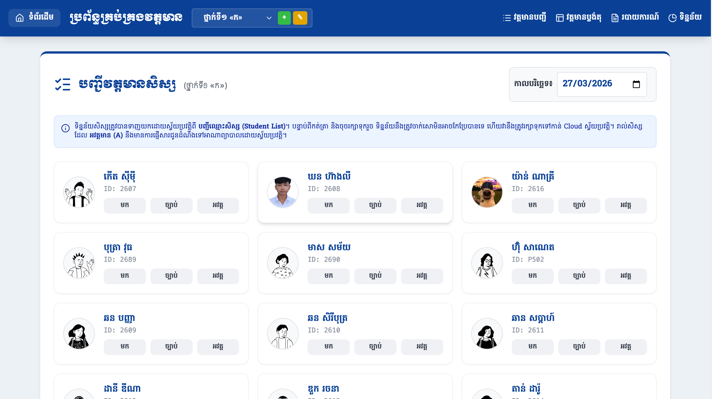
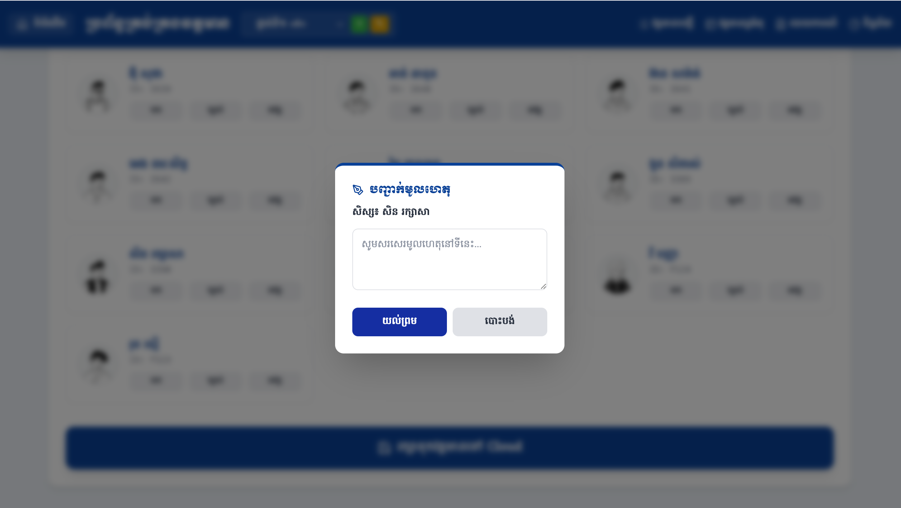
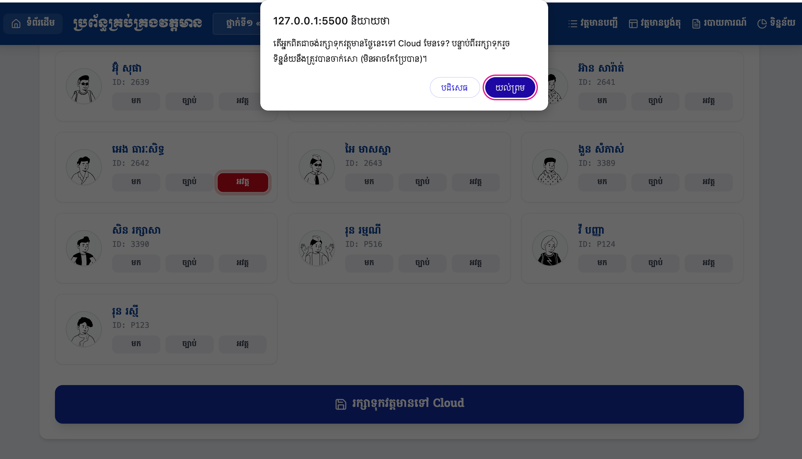
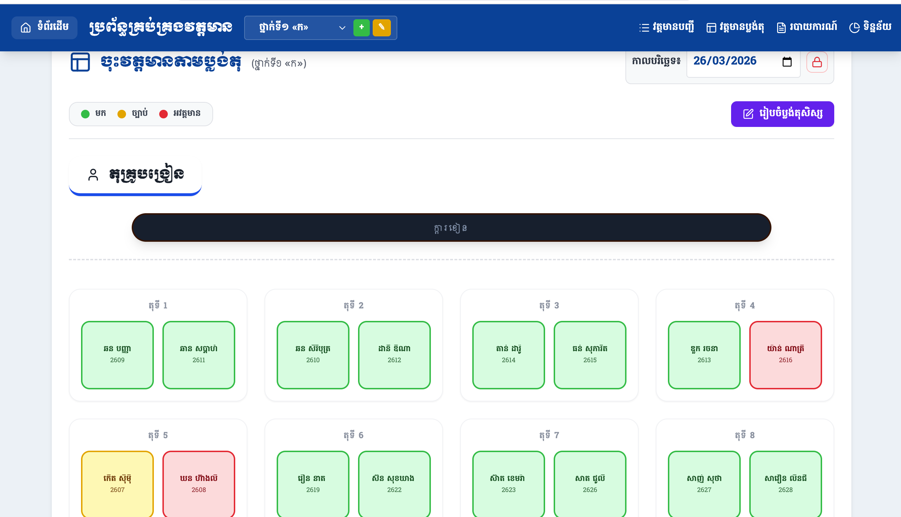
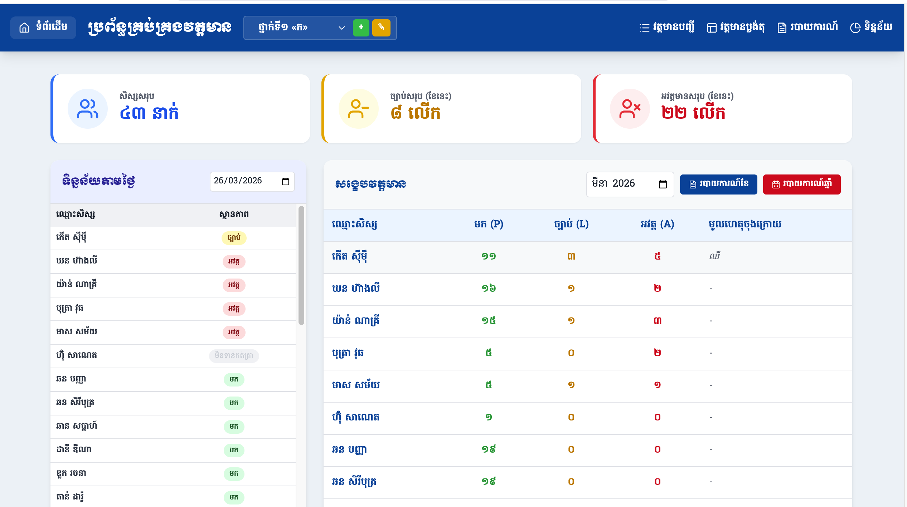
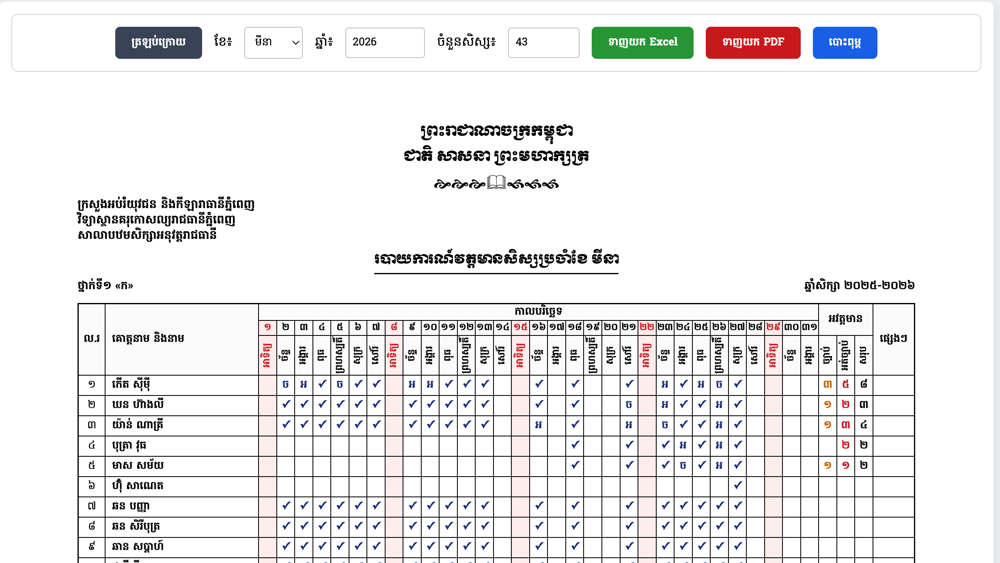
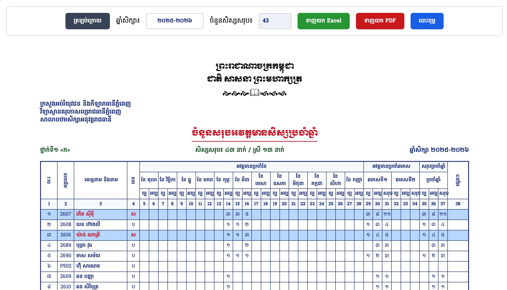

សៀវភៅណែនាំងាយស្រួលយល់សម្រាប់ការគ្រប់គ្រងវត្តមានសិស្សប្រចាំថ្ងៃ
មុខងារវៃឆ្លាត កត់ត្រារហ័ស រក្សាទុកសុវត្ថិភាព
ប្រព័ន្ធនឹងទាញយកឈ្មោះសិស្សពីបញ្ជីសិស្សមកដោយស្វ័យប្រវត្តិ។ លោកគ្រូអ្នកគ្រូគ្រាន់តែចុចលើប៊ូតុងស្ថានភាព ដើម្បីកត់ត្រា៖

នៅក្នុងបញ្ជីវត្តមាន យើងជ្រើសរើសតែសិស្សណាដែលមិនមក (អវត្តមាន) ឬ សុំច្បាប់ប៉ុណ្ណោះ។ បន្ទាប់មកចុចប៊ូតុង រក្សាទុកវត្តមានថ្ងៃនេះ នៅផ្នែកខាងក្រោម នោះប្រព័ន្ធវានឹង Select សិស្សដែលនៅសល់ទាំងអស់ថាបាន [មក] ដោយស្វ័យប្រវត្តិ។

ពេលចុច "ច្បាប់" ឬ "អវត្តមាន" ប្រព័ន្ធនឹងលោតផ្ទាំងឱ្យអ្នកវាយបញ្ជាក់មូលហេតុ។
ដើម្បីការពារភាពត្រឹមត្រូវនៃទិន្នន័យ ក្រោយពេលកត់ត្រារួច លោកអ្នកត្រូវចុចរក្សាទុកទិន្នន័យទៅកាន់ Cloud។

ចំណាំ៖ បន្ទាប់ពីចុចរក្សាទុក និងយល់ព្រម ទិន្នន័យនៃថ្ងៃនោះនឹងត្រូវបានចាក់សោមិនអាចកែប្រែដោយចៃដន្យបានទេ។ លើសពីនេះ រាល់សិស្សដែលមានស្ថានភាព "អវត្តមាន (A)" នឹងមានការផ្ញើសារជូនដំណឹងទៅដល់គណនីអាណាព្យាបាលដោយស្វ័យប្រវត្តិ។
ជាជម្រើសថ្មីមួយទៀត លោកគ្រូអ្នកគ្រូអាចរៀបចំប្លង់អង្គុយជាក់ស្តែងរបស់សិស្សក្នុងថ្នាក់ ហើយចុះវត្តមានដោយគ្រាន់តែចុចលើតុរបស់ពួកគេ។

?text=attendance-4.png'">ប្រព័ន្ធផ្តល់ជូនផ្ទាំងទិន្នន័យរហ័ស ដើម្បីឱ្យលោកអ្នកតាមដានវត្តមានរបស់សិស្សបានងាយស្រួល និងឃើញទិដ្ឋភាពរួមនៃថ្នាក់រៀន។

បង្ហាញចំនួនសិស្សសរុបនៅក្នុងថ្នាក់រៀនរបស់អ្នក។
បង្ហាញចំនួនលើកដែលសិស្សបានសុំច្បាប់សរុបក្នុងខែ។
បង្ហាញចំនួនលើកដែលសិស្សអវត្តមានសរុបក្នុងខែ។
ប្រព័ន្ធគាំទ្រការទាញយករហ័សជា PDF និង Excel ព្រមទាំងផ្តល់ទម្រង់របាយការណ៍ស្ដង់ដាររបស់ក្រសួងអប់រំ។

បង្ហាញជាទម្រង់ក្រឡា (Grid) ដែលមានសញ្ញាធីក (✓) សម្រាប់ថ្ងៃមក ពណ៌លឿងមានអក្សរ (ច) សម្រាប់សុំច្បាប់ និងពណ៌ក្រហមមានអក្សរ (អ) សម្រាប់អវត្តមាន។

បូកសរុបទិន្នន័យអវត្តមាន និងសុំច្បាប់សរុបប្រចាំខែនីមួយៗ រហូតដល់ពេញមួយឆ្នាំសិក្សា ដើម្បីងាយស្រួលវាយតម្លៃសិស្ស។
ទស្សនាវីដេអូខាងក្រោមដើម្បីស្វែងយល់បន្ថែមអំពីរបៀបប្រើប្រាស់ប្រព័ន្ធគ្រប់គ្រងវត្តមាន Krusmart ឱ្យកាន់តែច្បាស់។